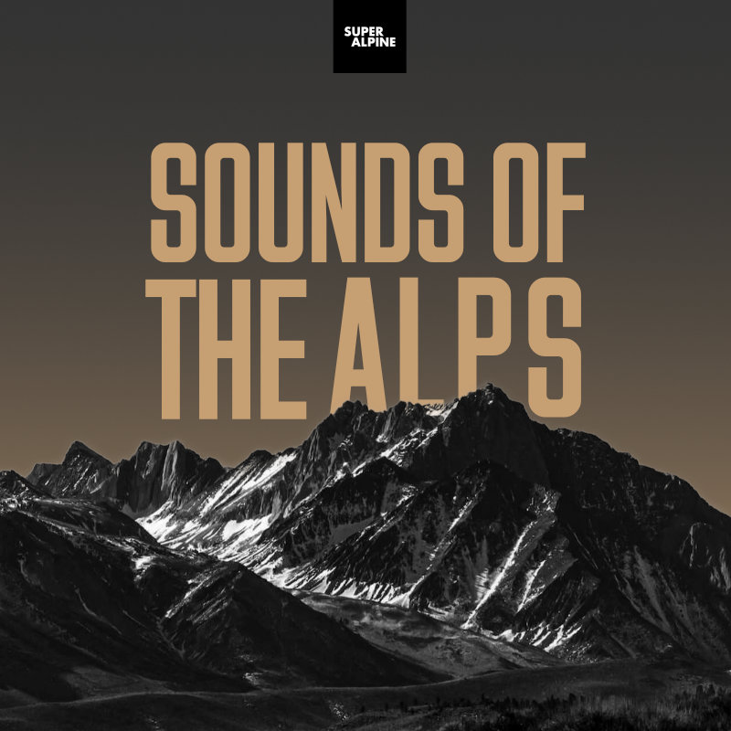

Sounds of the Alps
A series of immersive audio podcasts from Super Alpine
This podcast is best appreciated with noise canceling headphones.
Subscribe on your favourite podcast platform.
Trailer
Welcome to the Sounds of the Alps podcast. It's recorded using binaural microphones, so if you listen with headphones on, the spatial sound of what was heard and what you are hearing, should be the same. Think of it as virtual reality for your ears.
In this series we will be travelling to the more sonorous areas of the Alps, where the quiet of the mountains is interrupted by the sounds of the natural, and not so natural.